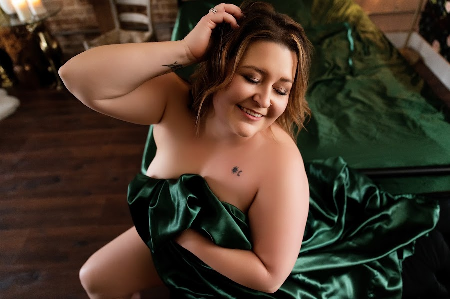
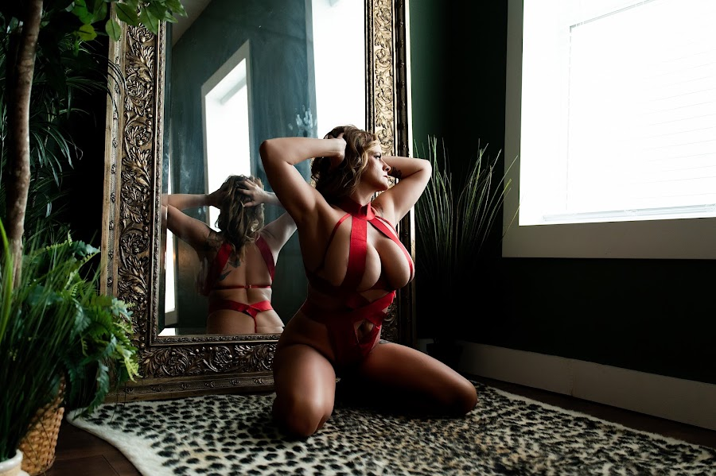
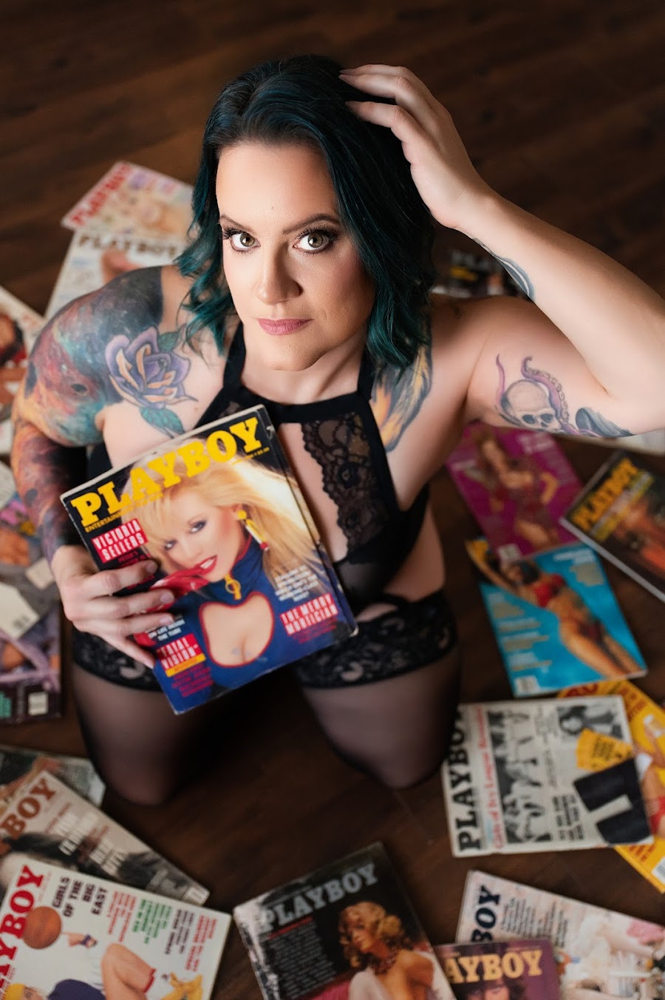
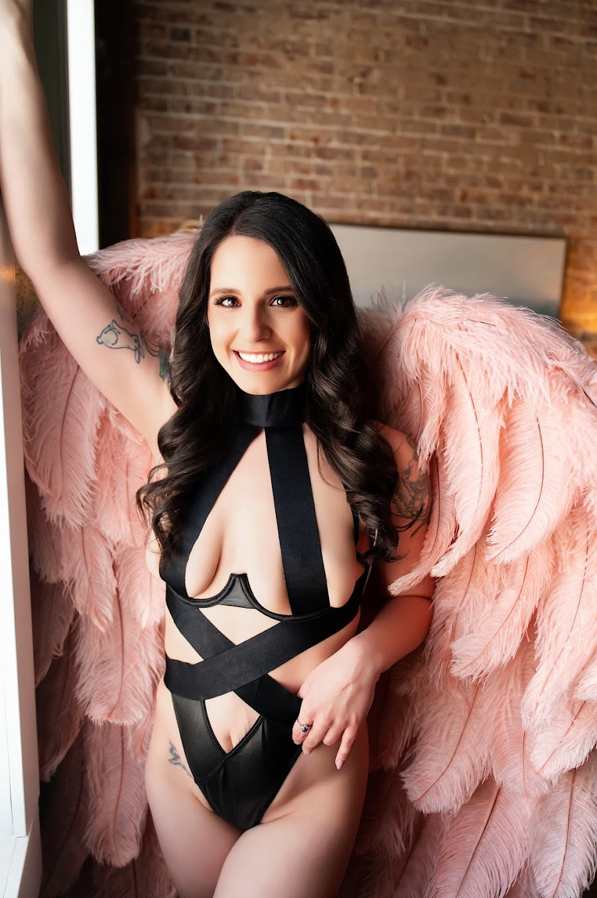
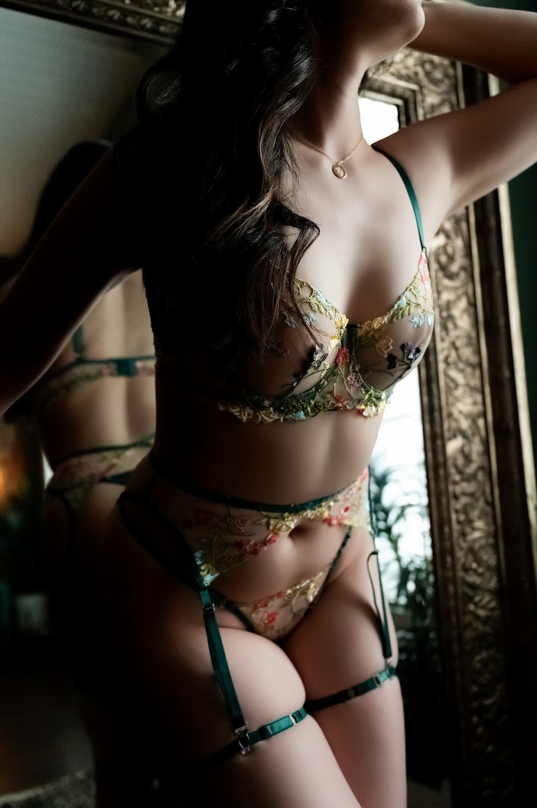
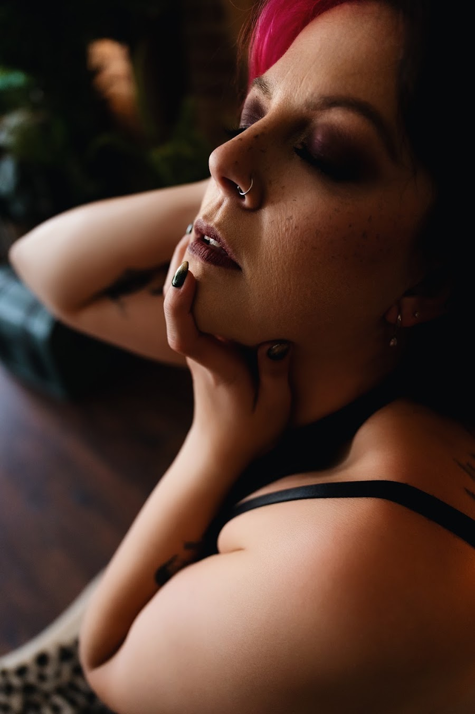

Visual identity · JHP Boudoir
One palette, one type pair, one set of rules — carried from the website all the way through to the payment plan. Specified against the exact fields Showit gives you.
You chose dark for the whole site, so the job is making dark feel safe rather than severe. Four things do that work, and none of them are negotiable if it's going to land.
The black is brown. #13100E is warm — red channel above blue. A blue-black like #0B0F14 at the same lightness reads clinical and masculine. This is the single most important value in the system.
The white is cream. #F2ECE2, never #FFFFFF. Pure white on near-black is the harshest pairing in common use and the reason most dark sites feel like a terminal.
Air, not density. Dark layouts need more breathing room than light ones to avoid feeling heavy — sections at 48–72px of vertical padding, body copy at 1.75 line-height, nothing crowded against an edge.
Warmth comes from the photographs. On a dark ground your images are the only source of skin tone and light in the frame, which is exactly why this palette suits boudoir. It also means a page with no photograph on it will feel cold no matter what the CSS says.
Seven values. Showit stores colors in numbered palette slots; the slots your site already uses are noted so you can overwrite in place rather than rebuilding every block.
Computed WCAG 2.1 ratios for every foreground on every ground. Two results change how you're allowed to use the palette, so they're worth reading rather than trusting.
| Foreground | on Ground | on Surface | on Raised | Verdict |
|---|---|---|---|---|
Ink #F2ECE2 | 16.13 | 15.12 | 14.14 | AAA |
Gold bright #E6C576 | 11.38 | 10.67 | 9.98 | AAA |
Gold #C9A24B | 7.90 | 7.41 | 6.93 | AA+ |
Muted #A99A86 | 6.91 | 6.47 | 6.06 | AA |
Dim #7D7161 | 3.98 | 3.73 | 3.49 | Large only |
Dim fails normal body text. At 3.98:1 it's under the 4.5:1 floor. Use it only at 18px+ or for uppercase labels where the tracking carries legibility. Never for a paragraph, a form hint, or fine print — which is exactly where the temptation lies.
Never put cream text on a gold button. #F2ECE2 on #C9A24B is 2.04:1 — effectively illegible. Gold buttons take the ground color as their label: #13100E on gold is 7.90:1. This is the mistake every dark-and-gold palette makes.
Showit gives you four text themes, each with a desktop and a mobile setting, plus two button styles. That's the whole surface — set these ten and the entire site changes. Both faces are on Google Fonts, so Showit can load them.
The biggest single change: drop uppercase off the display faces. Your Title and Heading themes are currently uppercase at 0.2em tracking. Wide-tracked uppercase is the house style of every free template on the internet — it's the strongest visual tell that a site wasn't designed for the business using it. Cormorant Garamond set large, in sentence case, tight, is what the price point actually looks like.
A transformation worth investing in
was Montserrat 400 · 35px / 20px · uppercase · ls .2em · lh 1.2
Hi, I'm Jess
was Rufina 400 · 23px / 14px · uppercase · ls .2em · lh 1.6
Jefferson City, Missouri
was Montserrat 300 · 14px / 11px · ls .2em · black — this theme becomes your eyebrow and label role, and it's the only one that stays uppercase.
I was a social worker before I was a boudoir photographer, which tells you most of what you need to know about how I run a session. I spent years learning how to make a person feel safe in a room. I just do it with a camera now.
was Rufina 400 · 13px · ls .1em · lh 1.8 · centered on desktop, left on mobile. Three problems at once: 13px is below comfortable reading size, letter-spaced body copy slows reading measurably, and centered multi-line paragraphs give the eye no fixed left edge to return to. Left-align both breakpoints.
| Setting | Primary | Secondary | Was |
|---|---|---|---|
| Background | #C9A24B | transparent | #000000 / transparent |
| Label color | #13100E | #C9A24B | #FFFFFF / #000000 |
| Border | none | 1px #C9A24B | none / 2px black |
| Type | Jost 500 · 13px | Jost 500 · 13px | Montserrat 300 · 14px |
| Tracking | .18em uppercase | .18em uppercase | .2em uppercase |
| Padding | 13px 26px | 12px 25px | 10px 14px |
| Corner radius | 2px | 2px | 10px |
| Hover | bg → #E6C576 | border + label → #E6C576 | no change / 70% opacity |
Why 2px instead of 10px. A 10px radius on a small button reads as a mobile app control. Luxury print and packaging use square or near-square corners, and your own album and wall art are square-cornered objects. The button should match the product.
Padding matters more than you'd think. Your current 10px 14px makes buttons look cramped and cheap at any size. Widening the horizontal padding to 26px is the cheapest upgrade in this entire document.
Real blocks from your Showit site, real copy, real prices — and your own photographs, taken from the eight in psq_photos that already run on your pre-session questionnaire. Two frames stay empty on purpose: there is no portrait of you in that set, and labelling a finished boudoir image as a “before” would be a lie.

Jefferson City, Missouri
Meet your photographer
I was a social worker before I was a boudoir photographer, which tells you most of what you need to know about how I run a session. I spent years learning how to make a person feel safe in a room. I just do it with a camera now.
Your session
It reserves your date on the calendar and covers everything it takes to get you in front of the camera.

Prints, albums and digitals are chosen separately at your reveal, once you’ve seen your images.
The work
Every single one. Not models — women from Jefferson City and Columbia and every small town in between, who decided to go first.




Before & after
Placeholders — your real Briana and Taylor pairs drop straight in.
Grab a fifteen-minute call. No pitch — just your questions, answered by the person who'll be photographing you.
@jhpboudoir_ · Jefferson City, MO
Your existing Showit blocks, and which value each one takes. Set the palette slots first and most of this follows automatically.
| Block | Now | Becomes |
|---|---|---|
header | #000000 | Ground #13100E |
menu | #FFFFFF | Ground #13100E |
intro / hero | image | Image + gradient scrim, ground beneath |
welcome (all 3 states) | — | Ground #13100E |
email-list | — | Surface #1C1714 |
before-and-after | — | Surface #1C1714 |
book-now | #000000 | Ground #13100E |
instagram | #000000 | Ground #13100E |
footer | #ECEBE8 | Ground #13100E |
new-canvas (contact) | #FFE4DC | Raised #241D18 |
Divider lines (se-line) | #643434 | Gold at 22% — or #3A2F22 solid |
The footer is the one to check by eye. It's currently the only light block on the page, so it acts as a visual full stop. Going dark removes that, and the page can end ambiguously. Add a 1px gold rule above the footer at 22% to replace the boundary the color change was doing.
Palette before type, type before blocks. Doing it the other way around means re-touching every block twice.
colors-0 updates itself.brand_tokens is an empty object right now, so this palette lives only inside individual page templates. Storing it once means every future page starts correct. I can do that whenever you want.